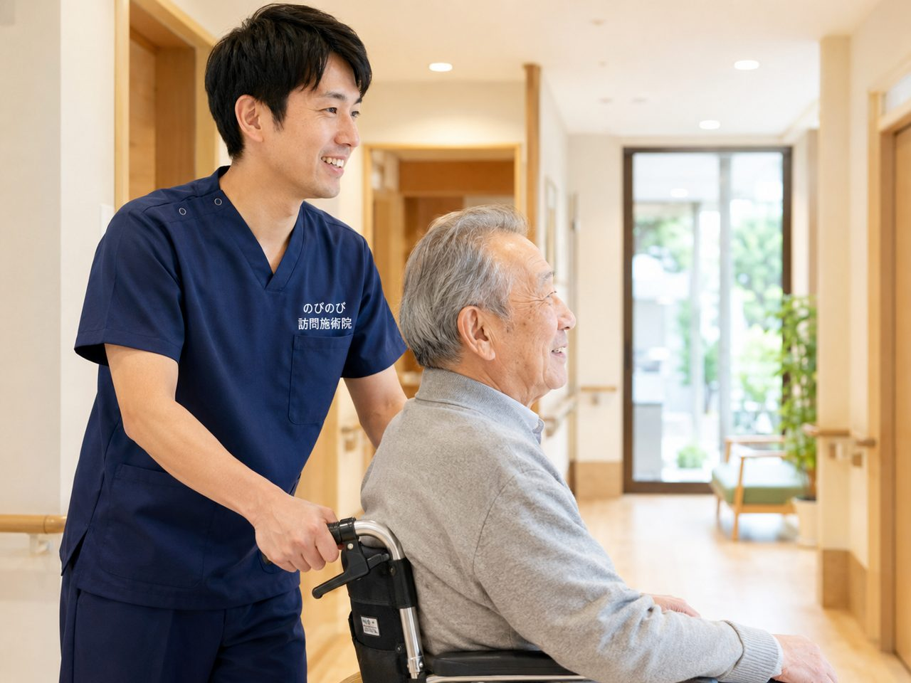

年を重ねると、立ち座りや階段、歩き始めのひと足目で膝がうずくようになります。正座がつらい、膝に水がたまってふくらむ、外出のたびに痛みが気になって出かける回数が減ってきた、吹田市でそんな膝を抱えている方に、ご自宅へ伺う訪問鍼灸があります。医師が必要と認めれば医療保険の対象です。ここでは、まず医療機関にかかったほうがよい状態と、鍼灸でできることを分けてご説明します。
この記事のポイント
膝の痛みが慢性的に続き、通院がむずかしくなってきた方は、訪問鍼灸を在宅ケアの選択肢に加えられます。医師の同意書があれば医療保険で受けられ、1回の施術は総額3,950円、1割負担の方でおよそ395円です。介護保険の限度額とは別枠なので、デイサービスやヘルパーと併用しても枠を圧迫しません。ただし転倒後に強く痛む、急に腫れて熱をもつといったときは、まず整形外科へ。鍼灸は原因が落ち着いた慢性期に、医療の治療を補う位置づけで組み合わせます。
吹田市で膝の痛みにお悩みの方へ、ご自宅まで伺います
吹田市は江坂の商業エリアから、千里ニュータウンや北千里・南千里の落ち着いた住宅街、山田や佐井寺まで、幅広い地域にうかがっています。膝に痛みがあると、日々の外出をためらってしまいがちです。「痛くて駅まで歩けない」「バスに乗るのがつらい」。そんな声を、JR吹田・岸辺や阪急吹田・豊津・関大前、地下鉄御堂筋線の江坂周辺で数多くお聞きしてきました。のびのび訪問施術院では、通院そのものが負担になっている方のご自宅へ伺い、膝と体の状態に合わせた施術を行っています。
吹田市全般の対応や当院の考え方については、「吹田市の訪問鍼灸マッサージ」もあわせてご覧ください。
「立ち座り」「階段」「正座」がつらい膝の痛みに向き合う
膝の痛みは、椅子からの立ち上がり、階段の上り下り、正座や和室での動作など、生活の一つひとつの場面に影を落とします。朝起きたときのこわばり、膝に水がたまってふくらむ腫れ、曲げ伸ばしの可動域が狭くなって「しゃがめない」感覚。変形性膝関節症などでよく見られるこうした変化は、少しずつ動く範囲を狭め、外出の機会まで奪っていきます。痛いからと動かさずにいると、太ももの筋力が落ちてさらに膝が不安定になり、痛みが増すという悪循環に入りやすいのも膝の特徴です。
膝の痛みで立ち座りに苦労されている方には、膝の痛みで立ち座りがつらい方へのページで症状をより詳しく掘り下げています。
無理なく動かす、機能訓練という視点
当院では、こわばった膝まわりの筋肉をやわらげるマッサージに加えて、痛みの出ない範囲で関節を動かし、太ももやお尻の筋肉を保つ機能訓練を大切にしています。使わないことで硬くなった関節や、やせてしまった筋肉に、少しずつ動きと力を取り戻していく。その積み重ねが、立ち上がりや歩き始めの一歩を楽にしていくことにつながります。ご本人の体調やその日の膝の状態を見ながら、決して無理をさせず、ご家族にもご自宅でできる簡単な動かし方をお伝えします。なお、施術は病気そのものを治すものではなく、効き方には個人差があります。
この機能訓練は鍼灸に加えて行っており、追加料金はいただきません。
保険と料金は、わかりやすく一律で
のびのび訪問施術院は、はり・きゅうを施術のベースにしていて、保険はすべて鍼灸で算定します。医師の同意書があれば医療保険（療養費）で受けられ、要介護認定は不要、介護保険の限度額とは別枠のため併用も可能です。はり・きゅうの医療保険が対象とするのは神経痛・リウマチ・頸肩腕症候群・五十肩・腰痛症・頸椎捻挫後遺症の6疾病で、膝をかばって出る腰や脚の痛みについて医師が施術を必要と認めた場合が対象になります。同一部位で医療保険のリハビリと鍼灸を同じ月に同時に算定することはできません。
料金は1回の総額が3,950円で、自己負担は1割で約395円です。週2回のご利用なら1割の方で月約3,160円が目安になります。吹田市のエリア内は出張費なし・料金一律です。仕組みの詳細は「料金はいくら？医療保険の自己負担額と仕組み」をご覧ください。
江坂から北千里まで、吹田のご自宅へ
江坂・佐井寺・山田・岸部・南吹田をはじめ、千里山や豊津、北千里・南千里の千里ニュータウン一帯まで、吹田市内を中心に伺っています。「うちまで来てもらえるだろうか」と気になる方は、「対応エリアはどこまで来てもらえる？」で範囲をご確認いただけます。膝の痛みで外出が減ってしまう前に、まずはお気軽にご相談ください。ご自宅で無理なく続けられる形を、相談しながら決めていきます。
よくある質問
整形外科で「年のせいだから」と言われた膝でも受けられますか？
慢性的に続く膝の痛みについて、医師が鍼やお灸での治療を必要と認めて同意書を書いてくれ、かつ通院がむずかしい状態であれば、医療保険の対象になります。年齢を理由に何もできないということはありません。今の膝の状態と通院の状況をお聞かせいただければ、受けられるかどうか一緒に確かめます。
膝の変形は治りますか？
変形そのものを元に戻したり、すり減った軟骨を再生させたりするものではありません。膝のまわりや太もも、お尻の筋肉のこわばりを和らげ、血のめぐりを促して、立ち座りや歩きやすさを支える補助のケアです。効果の感じ方には個人差があります。
膝に水がたまっているのですが、施術を受けられますか？
急に大きく腫れて熱をもっている、じっとしていても激しく痛むといったときは、まず整形外科を受診してください。炎症が落ち着いた慢性期であれば、まわりの筋肉のこわばりを和らげるケアを組み合わせられます。まずは今の状態をお聞かせください。
吹田市で膝の痛みでも来てもらえますか？
はい、吹田市へ伺います。江坂・千里山・山田・岸辺・南吹田などのご自宅で、膝まわりの慢性的な痛みやこわばりのケアを受けられます。上記以外の地域も吹田市内であればご相談ください。
保険を使うにはどうすればよいですか？
医師の同意書が必要です。吹田市のかかりつけ医にお願いでき、書き方や段取りは当院が整えます。同意書があれば、はり・きゅうの医療保険で膝のケアを受けられます。
費用はどのくらいですか？
1回の施術は総額3,950円で、1割の方でおよそ395円が目安です。週2回なら1割の方でひと月およそ3,160円です。別途の出張費はかからず、エリア内は同額です。
介護保険の限度額を使い切っていても受けられますか？
受けられます。膝の鍼灸は医療保険で計算するため、介護保険の区分支給限度額とは別枠です。デイサービスやヘルパーを利用していても、その枠に影響しません。
寝たきりに近い状態でも施術できますか？
できます。寝たまま、あるいはいすに座ったままでも受けられます。膝だけでなく股関節から足首まで、無理のない姿勢でみながらケアします。ご本人の負担にならないよう、その日の様子に合わせて内容を調整します。